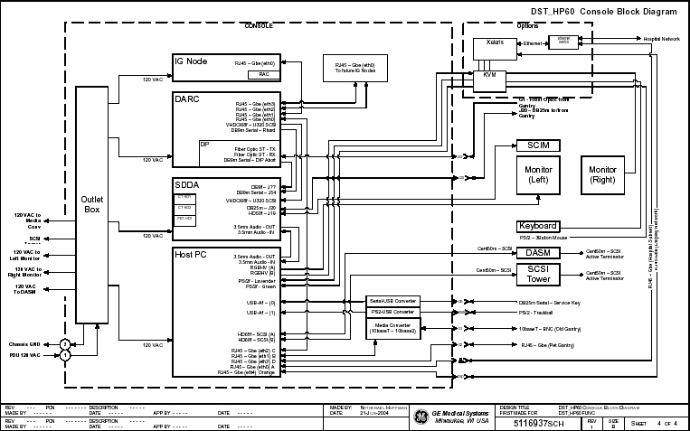
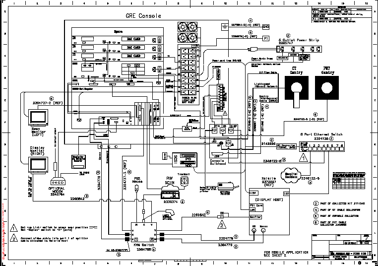

Operating Documentation
Direction 2378260-800, Rev# 10
GOC3 Service Methods (Adv)
Operating Documentation |
| Last Revised on: | October 27, 2004 |
Illustration 1: DST GRE Console Chassis Interconnects (LightSpeed 5.X)

Illustration 2: DST GRE Console Chassis Interconnects (LightSpeed 3.X/4.X)

| NOTE: | For a full size version of this illustration, click on the pdf icon below. |
Media File 1: Full Size Illustration: DST GRE Console Chassis Interconnects (LightSpeed 5.X)

Media File 2: Full Size Illustration: DST GRE Console Chassis Interconnects (LightSpeed 3.X/4.X)